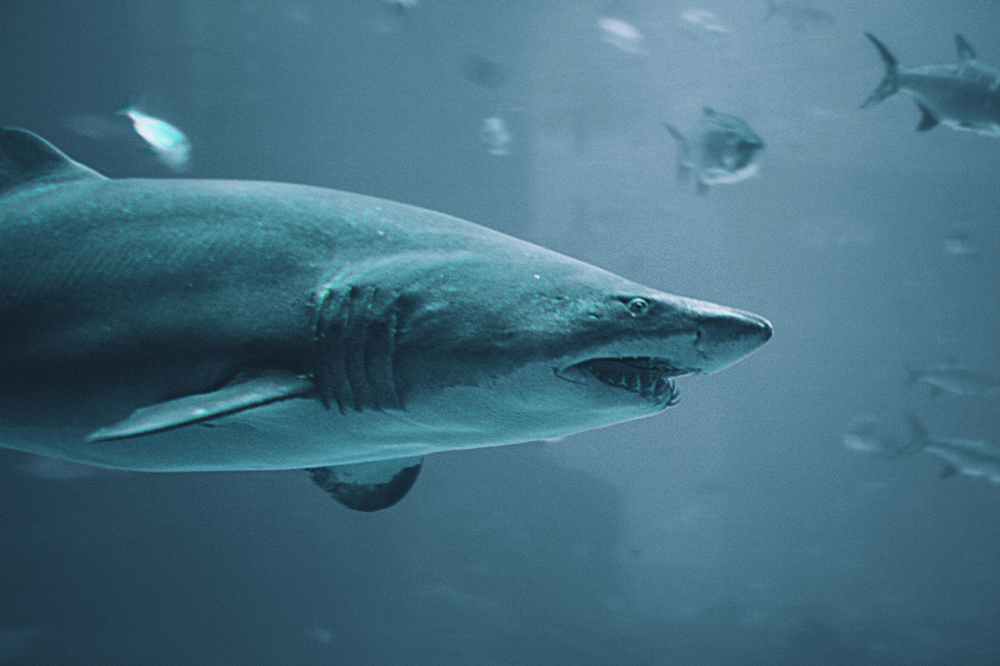
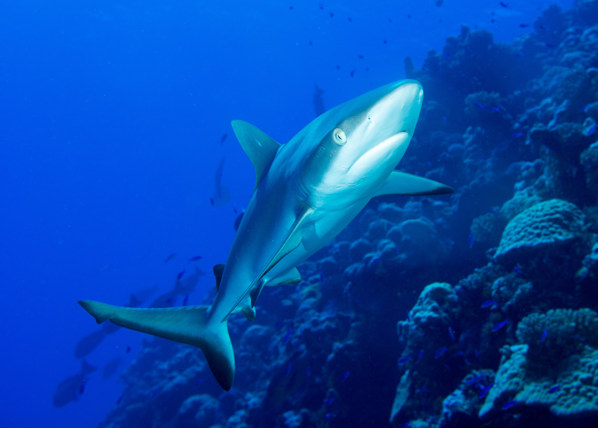
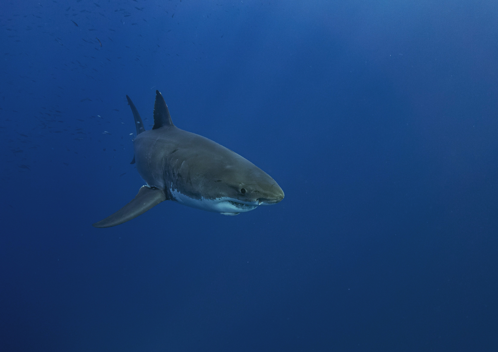
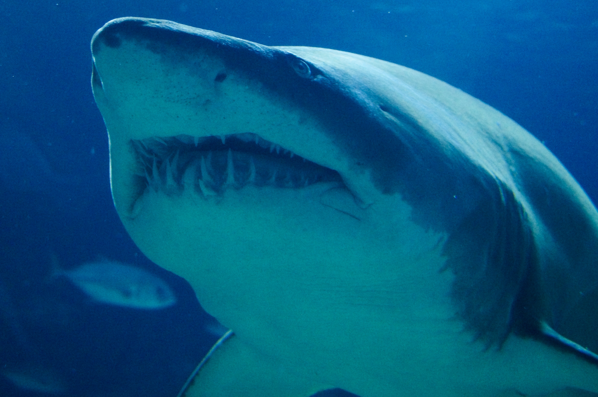
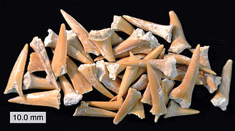

Sharks are a group of elasmobranch fish characterized by a cartilaginous skeleton, five to seven gill slits on the sides of the head, and pectoral fins that are not fused to the head. Modern sharks are classified within the clade Selachimorpha (or Selachii) and are the sister group to the rays. However, the term “shark” has also been used to refer to all extinct members of Chondrichthyes with a shark-like morphology, such as hybodonts and xenacanths.
With fossil records dating back 400 million years, sharks have outlived the dinosaurs and many other forms of life currently on earth. There are more than 1,000 species of sharks and rays, with new species discovered every year. These majestic top predators that are so essential to the natural order of marine ecosystems now face their most severe threat from overfishing. Many species are threatened with extinction, with some families of rays such as sawfishes in peril. While sharks and rays have been an irreplaceable resource for coastal communities in the developing world for centuries, this unique balance is in danger of being lost forever.
Evidence for the existence of shark-like chondrichthyans dates from the Ordovician period, 450 million years ago, before land vertebrates existed and before a variety of plants had colonized the continents. Only scales have been recovered from the first supposed elasmobranchians and not all paleontologists agree that these are from true sharks, suspecting that these scales are actually those of thelodont agnathans. The oldest generally accepted "shark" scales are from about 420 million years ago, in the Silurian period. Those animals looked very different from modern sharks. At this time the most common shark tooth is the cladodont, a style of thin tooth with three tines like a trident, apparently to help catch fish. The majority of modern sharks can be traced back to around 100 million years ago. Most fossils are of teeth, often in large numbers. Partial skeletons and even complete fossilized remains have been discovered. Estimates suggest that sharks grow tens of thousands of teeth over a lifetime, which explains the abundant fossils. The teeth consist of easily fossilized calcium phosphate, an apatite. When a shark dies, the decomposing skeleton breaks up, scattering the apatite prisms. Preservation requires rapid burial in bottom sediments.
Among the most ancient and primitive shark-like fish is Cladoselache, from about 370 million years ago, which has been found within Paleozoic strata in Ohio, Kentucky, and Tennessee. At that point in Earth's history these rocks made up the soft bottom sediments of a large, shallow ocean, which stretched across much of North America. Cladoselache was only about 1 metre (3.3 ft) long with stiff triangular fins and slender jaws. Its teeth had several pointed cusps, which wore down from use. From the small number of teeth found together, it is most likely that Cladoselache did not replace its teeth as regularly as modern sharks. Its caudal fins had a similar shape to the great white sharks and the pelagic shortfin and longfin makos. The presence of whole fish arranged tail-first in their stomachs suggest that they were fast swimmers with great agility.
Most fossil shark-like fish from about 300 to 150 million years ago can be assigned to one of two groups. The Xenacanthida was almost exclusive to freshwater environments. By the time this group became extinct about 220 million years ago, they had spread worldwide. The other group, the hybodonts, appeared about 320 million years ago and lived mostly in the oceans, but also in freshwater. The results of a 2014 study of the gill structure of an unusually well preserved 325-million-year-old fossil suggested that sharks are not "living fossils", but rather have evolved more extensively than previously thought over the hundreds of millions of years they have been around.
It appears Selachiimorpha and Batoidea split in the Triassic. Modern sharks began to appear about 100 million years ago. Fossil mackerel shark teeth date to the Early Cretaceous. One of the most recently evolved families is the hammerhead shark (family Sphyrnidae), which emerged in the Eocene. The oldest white shark teeth date from 60 to 66 million years ago, around the time of the extinction of the dinosaurs. In early white shark evolution there are at least two lineages: one lineage is of white sharks with coarsely serrated teeth and it probably gave rise to the modern great white shark, and another lineage is of white sharks with finely serrated teeth. These sharks attained gigantic proportions and include the extinct megatoothed shark, Megalodon. Like most extinct sharks, Megalodon is also primarily known from its fossil teeth and vertebrae. This giant shark reached a total length (TL) of more than 16 metres (52 ft). Megalodon may have approached a maxima of 20.3 metres (67 ft) in total length and 103 metric tons (114 short tons) in mass. Paleontological evidence suggests that this shark was an active predator of large cetaceans.